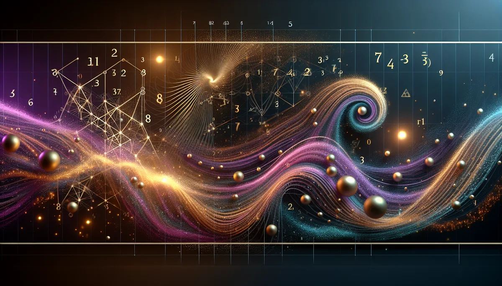

宋代陳摶融合河圖洛書與《周易》創立的數理命理。八字化為天地數，天地數化為先天卦，卦象化為命運動態。
📜 源頭脈絡
河洛理數是中國易學裡最「數學」的一支。它把八字的天干地支轉換成數字，再用數字起卦，用卦象看命。別的命理系統用五行生克、用星曜排盤，河洛理數直接跳到底層：數字。「道生一，一生二，二生三，三生萬物。」河洛理數就是在找那個最原始的「數」。
陳摶與華山
河洛理數的創始人被認為是五代宋初的陳摶（約871-989年），道號希夷先生，住在華山隱居修道。陳摶這個人在中國思想史上的地位很特殊：他不是純粹的道士，也不是純粹的儒者，而是把河圖、洛書、太極圖、先天八卦這些東西重新整理，傳給了後來的邵雍（1012-1077）、周敦頤（1017-1073）等宋代大儒。可以說，宋明理學的宇宙觀骨架，有一大半是從陳摶這裡來的。
但「河洛理數」這個名字本身的文獻記載並不明確。現存的《河洛理數》一書，學術界對其成書年代和作者有爭議。有人認為是陳摶原著，有人認為是後人託名。但無論作者是誰，這套系統的數學邏輯是自洽的。
天數地數的轉換規則
河洛理數的計算核心：把八字的天干地支各自對應一個數值（甲己子午九、乙庚丑未八、丙辛寅申七、丁壬卯酉六、戊癸辰戌五、巳亥四）。八個數字中，奇數的加總為「天數」，偶數的加總為「地數」。天數代表先天稟賦（上卦），地數代表後天環境（下卦）。天數除以8取餘數定上卦，地數除以8取餘數定下卦，合起來就是本命卦。
「元堂」是河洛理數最獨特的概念：根據出生時辰，在本命卦的六爻中找到一個特定的爻位，作為生命的核心座標。大運的推算也從元堂爻出發，每一爻管若干年。
河洛理數的底層邏輯是一種數學映射：把時間參數（八字）轉換為數值，再把數值轉換為符號系統（卦象）。這個映射本身是確定性的，同一組八字永遠得到同一個卦，沒有隨機性。
從資訊理論的角度看，河洛理數做的事情是「降維」：把八個干支（60¹的空間）壓縮成一個六爻卦象（64種可能）。這個壓縮過程不可逆，意味著不同的八字可能得到相同的卦。這是設計上的取捨：用解析度換取可讀性。
河洛理數至今沒有任何現代統計研究驗證其預測效度。但它的數學結構（模運算、映射函數、符號編碼）在密碼學和資訊科學的語言裡是可以嚴格描述的。這讓它成為所有命理系統中最容易「程式化」的一套。
河洛理數把命壓成一個卦，六爻就是六個人生切面。精油不看卦，看的是您站在哪一爻。
乾卦（天）的人：什麼都想扛。乳香的沉香煙氣讓「我必須撐住」鬆開一個縫，不是放下，是允許有人幫忙。
坎卦（水）的人：習慣在暗處獨自走。雪松的木質氣味像隧道盡頭透進來的一點光，不是照亮全部，但夠讓腳知道下一步踩哪裡。
艮卦（山）的人：停在原地不是因為不想動，是不確定動了會不會更糟。迷迭香的清冽穿透力像有人在耳邊說：「想太多的時候，先動一步再說。」
坤卦（地）的人：承載是本能，拒絕是功課。玫瑰的甜沉是一個邀請，邀請土地記得自己不只是被踩的，也是可以開花的。
✦ 數字生卦，卦映命格。但卦是座標不是牢籠，精油是氣味不是解藥。知道站在哪裡，比知道該去哪裡重要。